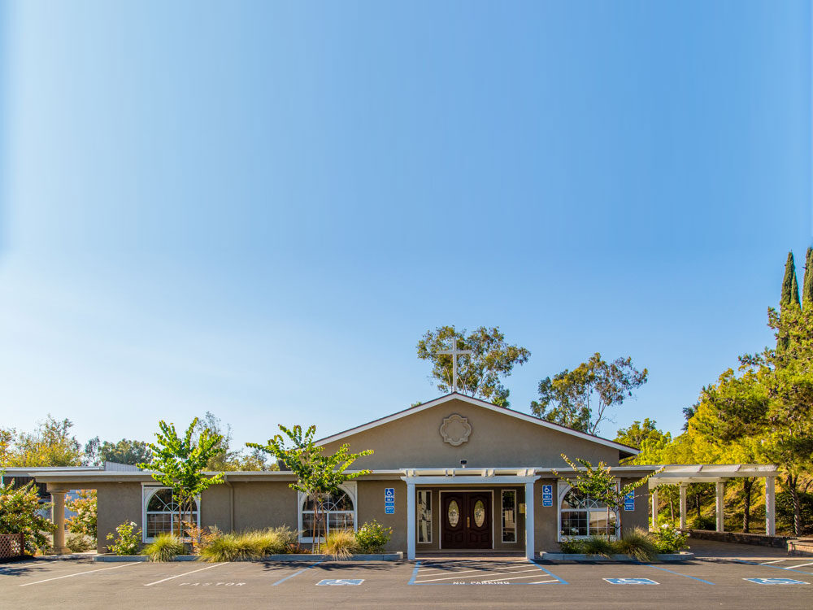
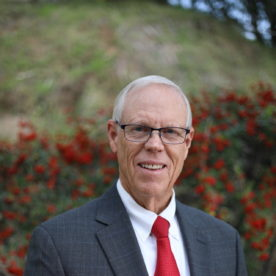
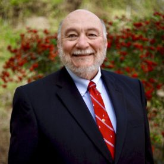
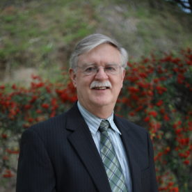
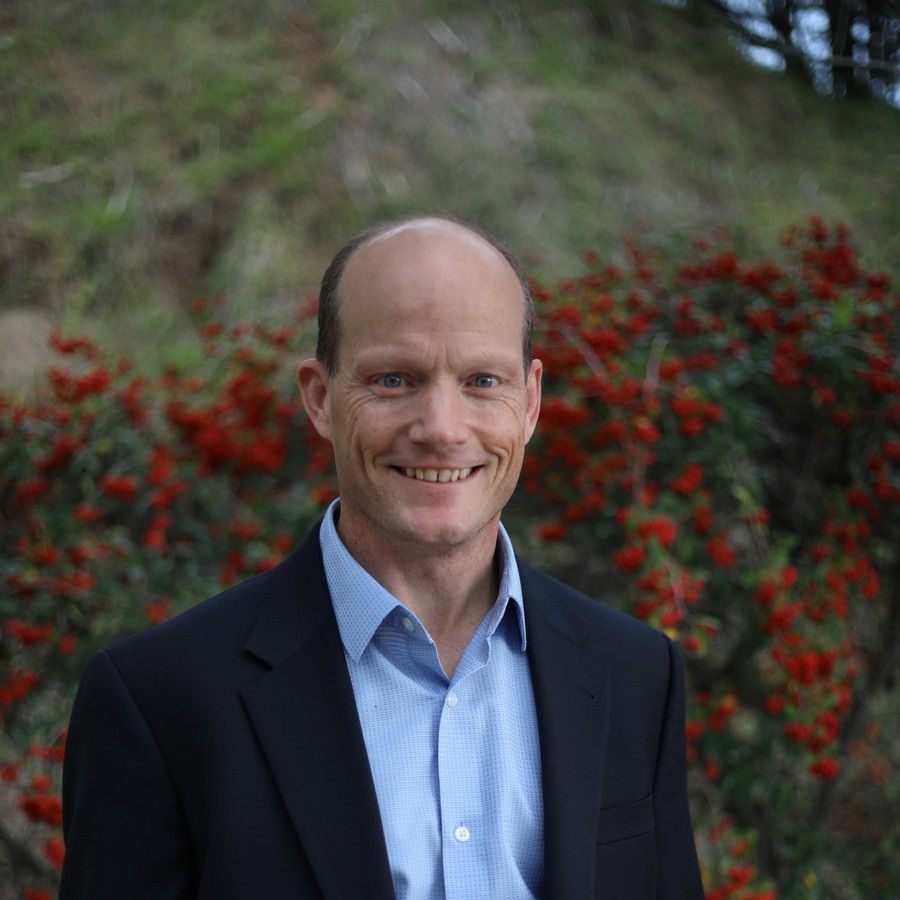
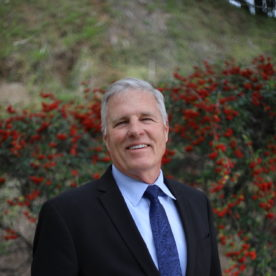

Home / About
About us
Our mission, our doctrine, our government, and the men who serve this congregation.
Our mission
Bringing glory to God
Bonita Orthodox Presbyterian Church is steadfastly committed to the worshipping of our Lord and Savior, Jesus Christ, and thereby bringing glory to God. We seek to bring glory to Him in the preaching of the Gospel and in living as faithful witnesses for Christ.
Our doctrine
Our doctrine is known in most conservative Presbyterian churches as the “Reformed Faith.” It summarizes the most significant doctrines taught in the Bible and is secondary to Scripture, our final authority. These doctrines are set forth in the Westminster Confession of Faith and the Larger and Shorter Catechisms, with accompanying biblical references.
Read the Confession and Catechisms
How this church began
Bonita began in 1971 as a weeknight prayer group among members of the Point Loma congregation. What follows is the short version of how a prayer meeting became a church with a building on Central Avenue.
- 1971
- A weeknight prayer group forms among members of Point Loma OPC.
- 1972
- The first worship service is held on September 17 at Ella B. Allen School. Forty-four people are present.
- 1973
- The congregation calls Mr. John Garrisi as its first pastor in April, and is received as a particular congregation into the Presbytery of Southern California on September 12.
- 1977
- Ground is broken on the Central Avenue property on April 24. For nine months the congregation does the work itself on Saturday mornings — digging ditches, laying pipe, setting the forms for the foundation — beginning each work day with devotions at eight o’clock.
- 1977
- The first worship service in the finished building is held on Christmas Day.
The building on Central Avenue has been the congregation’s home ever since.
Our church government
The church is no mere human organization or a means to an end. The church is Christ’s body, of which He is the head. As a faithful branch of the true church, the OPC acknowledges Jesus Christ as her only head and His word as the final authority in all matters of faith and life.
It is our desire to be faithful to our Lord, not only in matters of doctrine, but also in matters of structure, government, and order. Accordingly, we have a Presbyterian form of government. Each congregation is governed by a session, which consists of one or more ministers (teaching elders) and a number of ruling elders. Elders must meet the scriptural qualifications for the eldership. They are ordained for life and installed to office.
Ministers are licensed and ordained by regional presbyteries and are called by congregations; ruling elders are elected by congregations. Deacons are elected by congregations to oversee their ministries of mercy. They are ordained, but they do not exercise spiritual rule alongside elders. Non-ordained members often sit on committees that supervise important areas of congregational life, but always under the oversight of the session.
Our leadership
Session and diaconate

Mike Chism
Elder

Lee McMorris
Elder

Maynard Skidmore
Elder

Andy Weld
Elder

Scott York
Deacon
Wider church
We are part of something larger
The Orthodox Presbyterian Church
The denomination we belong to, its history, and its congregations across the country.
Worldwide Outreach
Home missions, foreign missions, and Christian education across the OPC.
Presbytery of Southern California
The regional body of OPC congregations that this church belongs to.